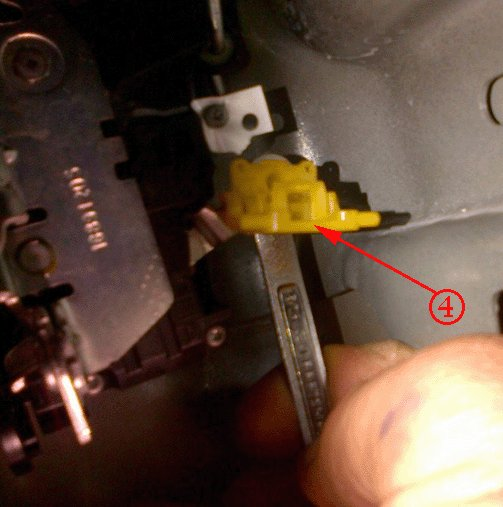

Body - Rear Door Handle, Latch, Lock Inoperative, Won't Open
TECHNICALBulletin No.: 12-08-64-002
Date: June 22, 2012
Subject: Rear Door Handle, Latch, Lock Inoperative, Binding, Will Not Open, Will Not Release Intermittently (Perform Repairs as Outlined)
Models:
2007-2012 Cadillac Escalade
2007-2012 Chevrolet Tahoe
2007-2012 GMC Yukon, Yukon Denali
Vehicles Built Prior to June 1, 2012
Condition
Some customers may comment that the rear door outside and/or inside handle is inoperative or will not allow the door to be opened.
They may also comment that the door handle feels disconnected or broken.
Cause
This condition may be caused by the outside door handle lock rod contacting the door lock under certain conditions, causing a bind condition.
Condition
Inspect for the condition and perform repairs as outlined to adjust the lock release arm of the outside door handle.
Note
Do Not replace the outside door handle or the door lock assembly for this concern.
1. Ensure the rear side door window is in the full up position.
2. Remove the rear side door trim panel. Refer to Rear Side Door Trim Panel Replacement in SI.
3. Remove the rear door water deflector. Refer to Rear Side Door Water Deflector Replacement in SI.
4. Cycle the outside door handle and observe the motion of the lock rod (1) for possible contact with the lock assembly (2) in the area shown.
Note
Do Not attempt to adjust the outside door handle lock release arm (3) of the door handle in vehicle position. The outside door handle must be removed to allow for proper adjustment of the lock release arm.
5. If the lock rod (1) contacts the lock assembly (2) during handle motion, continue performing the following steps to adjust the lock release arm (3) of the door handle.
6. Release the lock rod adjustment clip (4) from the lock rod (1).

Note
Do Not reuse the lock rod adjustment clip (4). Once the adjustment clip (4) has been opened, it must be replaced.
7. Using an 8 mm wrench, compress the adjustment clip (4) retaining tabs, and remove the clip from the lock assembly.
8. Remove the outside door handle with lock rod from the vehicle.
9. Take note of the orientation of the lock rod (1) to the lock release arm (3) of the handle.
10. Remove the lock rod from the lock release arm.
11. Carefully remove the lock rod bushing (5) from the lock release arm of the handle.
12. Carefully secure the lock release arm of the handle in a bench vise; ensure the handle finished surfaces and mounting gasket are not damaged.
13. Using pliers, carefully bend the end of the lock release arm 2-3 mm downward as shown (forward in vehicle position).
The above image demonstrates a lock release arm before adjustment.
The above image demonstrates a lock release arm after being adjusted 2-3 mm forward in vehicle position.
14. Install the lock rod bushing to the lock release arm of the handle as noted before removal.
15. Install the lock rod to the lock release arm of the handle as noted before removal.
16. Install the outside door handle with lock rod to the door.
Tighten
Tighten the handle bolts to 6 Nm (53 lb in).
17. Before installing the New lock rod adjustment clip, observe the original type of clip removed to determine if it was the type shown above.

18. If the original clip was the type shown in the previous image, then the anti-rotation tab (2) on the New replacement clip must be removed at its base using cutters.
19. If the original clip was the same type as the New replacement clip, no modifications are needed.
20. Install the New lock rod adjustment clip (4) to the lock with the open side of the clip facing inboard.
21. Position the lock rod (1) to the New adjustment clip (4).
22. While the handle and lock assembly are relaxed, secure the adjustment clip (4).
23. Cycle the outside handle to ensure proper function and to ensure the condition has been corrected.
24. Install the rear door water deflector. Refer to Rear Side Door Water Deflector Replacement in SI.
25. Install the rear side door trim panel. Refer to Rear side Door Trim Panel Replacement in SI.
Parts Information
Warranty Information
For vehicles repaired under warranty, use.

Disclaimer